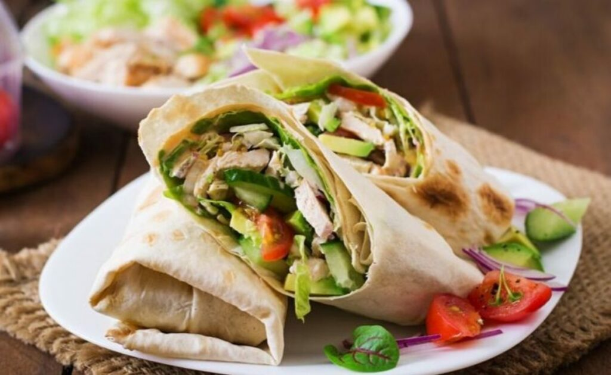

Receitas de refeições fitness para não sair da dieta
Ao longo da semana a vida é uma correria, mal temos tempo para cozinhar alimentos saudáveis, e acabamos nos rendendo ao consumo de alimentos
ultraprocessados, ricos em sódio, açúcar e gordura.
No entanto, selecionamos algumas dicas práticas para deixar suas refeições mais saudáveis, para que você possa passar sua semana se alimentando bem e com muita saúde.
Vem dar uma conferida!

-
Lanches Fitness:
Dicas para preparo de refeições rápidas e nutritivas, para a semana.
-
Marmitas fit para a sua semana:
Esta dica é perfeita para quem vive na correria, e precisa manter uma boa alimentação.
-
Puffs de Batata Doce:
Puffs deliciosos feito com ingredientes acessíveis, uma ótima opção saudável para o lanche da tarde.
-
Bolinho de Frango com Aveia:
Nesta quarta sugestão de salgado assado fitnes, fonte de proteína, feito com frango e aveia, rico em fibras, ótima opção para quem precisa de ganho de massa muscular.
-
Coxinha Fit:
Para matar a vontade do salgadinho mais amado das festas de aniversário, uma ótima sugestão de receita, cozinha feita com batata doce, aveia e frango,
alimentos fontes de carboidrato, proteína e fibras, boa ideia para comer algo diferente e mesmo assim mantendo a alimentação saudável da semana.